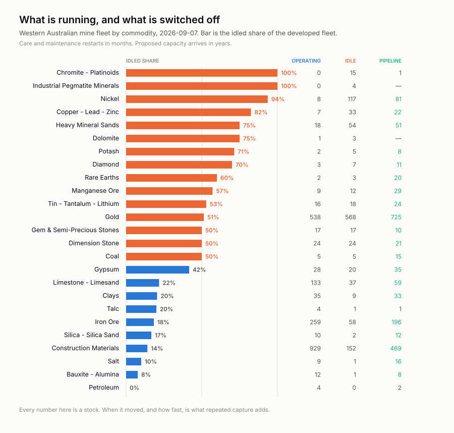
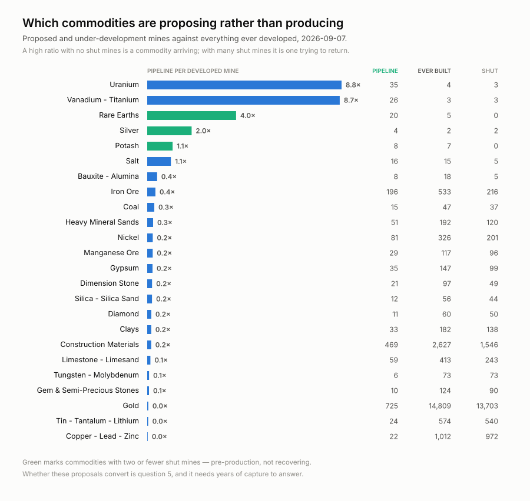
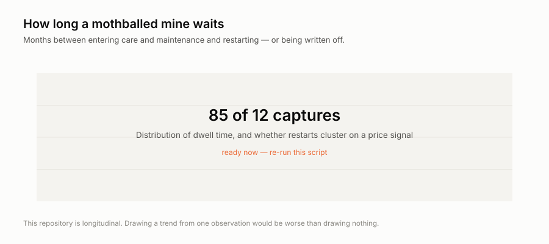
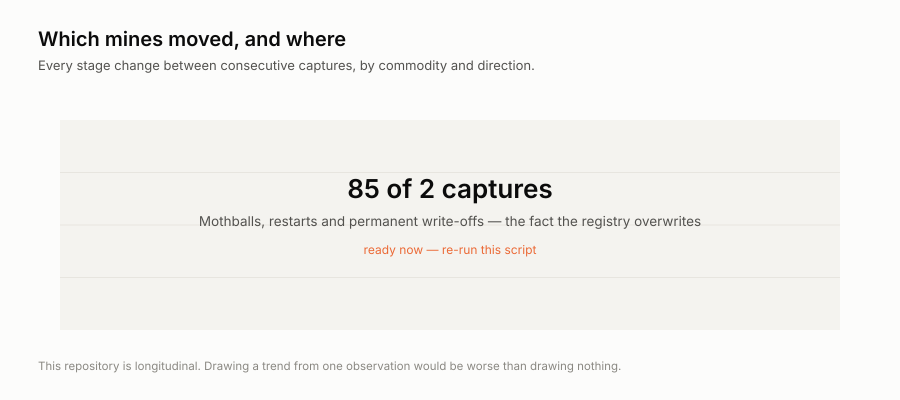

Point-in-time captures from 2 sources that do not keep their own history. Each capture stores the bytes as served, with a manifest row recording the URL, fetch time and SHA-256.
History held: 2026-09-03 to 2026-09-08.
Figures are rebuilt from the derived tables on every run; each one names the entities it is about so it can be acted on without a further query.




| source | publisher | cadence | terms |
|---|---|---|---|
wa.minedex.sites | DMIRS Western Australia | monthly | Creative Commons Attribution 4.0 (WA SLIP public services); see https://catalogue.data.wa.gov.au/dataset/minedex |
wa.tenements.live | DMIRS Western Australia | monthly | Creative Commons Attribution 4.0 (WA SLIP public services); see https://catalogue.data.wa.gov.au/dataset/mining-tenements-dmirs-003 |
Derived tables are CSV under data/ in
the repository; the bytes they came from are under
raw/, and SOURCES.md lists every source URL.
Every observation carries source_id and raw_ref. The
matching manifest row holds that raw_ref with the URL, the fetch
timestamp and a SHA-256 of exactly what came back, so any number here traces to
the bytes it came from.
Cite this dataset by its repository and the date you took it from: https://github.com/q3dresearch/wss-mining-pipeline, accessed 2026-09-08.